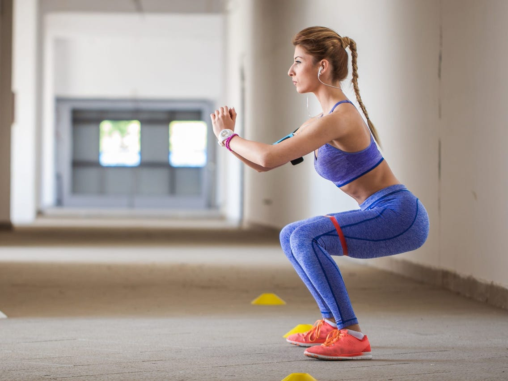

Place your feet at hip distance with the toes pointing slightly outwards. Bend the knees as much as feels comfortable, keeping the heels on the ground and the knees over (not in front of) the feet. Bend and stretch the legs. Perform this exercise 10–15 times (or more), rest for 30–60 seconds, and repeat up to 5 times. This exercise strengthens your legs and glutes.
